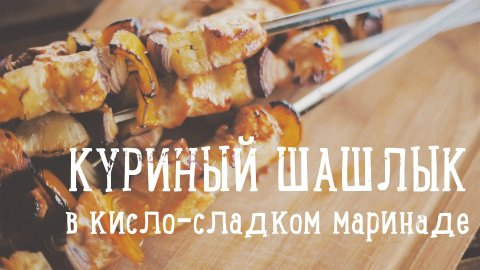

Шашлы́к (крымско-тат. шишлик, от шиш — вертел[1]) — изначально блюдо из баранины мелкой нарезки, нанизанное на шампур и запеченное на древесном угле в мангале; при этом возможно применение маринада от простейших специй — соль, чёрный перец, уксус, до сложных многокомпонентных составов, требующих особого приготовления. Позже название «шашлык» в русском языке распространилось на блюда из свинины, птицы, рыбы, овощей, приготовленные тем же способом.
Шашлык из курицы подкупает быстротой приготовления, диетическими свойствами и, конечно, вкусом. Подробней о шашлыке из курицы ... Очень вкусным и ароматным получается шашлык из курицы, маринад для которого готовится из соевого соуса, лимонного сока, лука и зелени. ... Отдельно маринуется лук для шашлыка из курицы